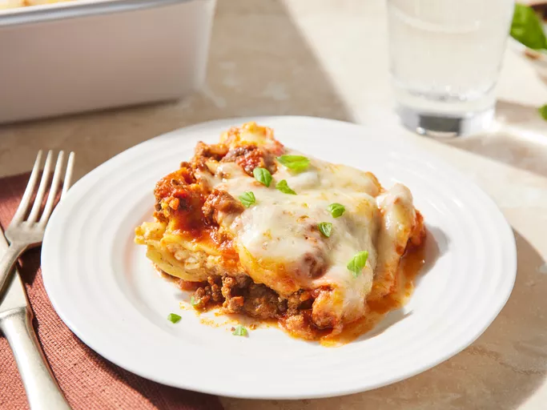

Lasagna

Description
Nothing says comfort food like a classic, hearty homemade lasagna. This recipe layers tender pasta sheets with a
seasoned ground beef marinara sauce, a rich and creamy cottage cheese mixture, and an abundant topping of melted
mozzarella and Parmesan. It is a crowd-pleasing centerpiece that is perfect for Sunday dinners and family
gatherings alike.
Ingredients
- 1 pound lean ground beef
- 1 (32 ounce) jar spaghetti sauce
- 32 ounces cottage cheese
- 3 cups shredded mozzarella cheese, divided
- 2 eggs
- ½ cup grated Parmesan cheese
- 2 teaspoons dried parsley
- salt to taste
- ground black pepper to taste
- 9 lasagna noodles
- ½ cup water
Steps
- Gather all ingredients and preheat the oven to 350°F (175°C).
- Heat a large skillet over medium-high heat.
- Cook and stir ground beef in the hot skillet until browned and crumbly, 8 to 10 minutes. Drain and discard
grease.
- Stir in spaghetti sauce and simmer for 5 minutes.
- Combine cottage cheese, 2 cups of mozzarella cheese, eggs, 1/2 of the grated Parmesan cheese, dried parsley,
salt, and pepper in a large bowl.
- Spread 3/4 cup of sauce in the bottom of a 9x13-inch baking dish.
- Cover with 3 uncooked lasagna noodles, 1 3/4 cups of the cheese mixture, and 1/4 cup of sauce. Repeat this
layering sequence once more.
- Top with the remaining 3 noodles, remaining sauce, remaining mozzarella, and remaining Parmesan cheese.
- Pour 1/2 cup of water carefully along the inside edges of the dish, then cover tightly with aluminum foil.
- Bake in the preheated oven for 45 minutes. Uncover and bake for an additional 10 minutes, or until the
cheese is bubbly and golden.
- Let the lasagna stand for 10 minutes before slicing and serving.